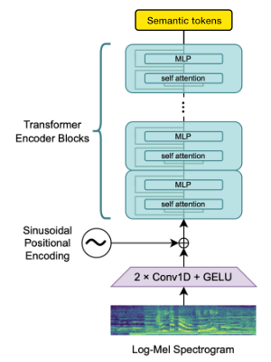

WhisperSpeech

If you have questions or you want to help you can find us in the #audio-generation channel on the LAION Discord server.
An Open Source text-to-speech system built by inverting Whisper. Previously known as spear-tts-pytorch.
We want this model to be like Stable Diffusion but for speech – both powerful and easily customizable.
We are working only with properly licensed speech recordings and all the code is Open Source so the model will be always safe to use for commercial applications.
Currently the models are trained on the English LibreLight dataset. In the next release we want to target multiple languages (Whisper and EnCodec are both multilanguage).
Progress update [2023-12-10]
Another trio of models, this time they support multiple languages (English and Polish). Here are two new samples for a sneak peek. You can check out our Colab to try it yourself!
English speech, female voice (transferred from a Polish language dataset):
https://github.com/collabora/WhisperSpeech/assets/107984/aa5a1e7e-dc94-481f-8863-b022c7fd7434
A Polish sample, male voice:
https://github.com/collabora/WhisperSpeech/assets/107984/4da14b03-33f9-4e2d-be42-f0fcf1d4a6ec
Downloads
We encourage you to start with the Google Colab link above or run the provided notebook locally. If you want to download manually or train the models from scratch then both the WhisperSpeech pre-trained models as well as the converted datasets are available on HuggingFace.
Roadmap
- Extract acoustic tokens
- Extract Whisper embeddings and quantize them to semantic tokens
- Semantic token to acoustic token (S->A) model
- Text token to semantic token (T->S) model
- Improve the EnCodec speech quality
- Improve inference of short sentences
- Gather a bigger emotive speech dataset
- Document the LibriLight derived datasets we released on Hugginface
- Create a community effort to gather freely licensed speech in multiple languages
- Train final multi-language models
Architecture
The general architecture is similar to AudioLM, SPEAR TTS from Google and MusicGen from Meta. We avoided the NIH syndrome and built it on top of powerful Open Source models: Whisper from OpenAI to generate semantic tokens and perform transcription, EnCodec from Meta for acoustic modeling and Vocos from Charactr Inc as the high-quality vocoder.
Whisper for modeling semantic tokens
We utilize the OpenAI Whisper encoder block to generate embeddings which we then quantize with a small 2-layer model to get semantic tokens.
If the language is already supported by Whisper then this process requires only audio files (without ground truth transcriptions).

EnCodec for modeling acoustic tokens
We use EnCodec to model the audio waveform. Out of the box it delivers reasonable quality at 1.5kbps and we can bring this to high-quality by using Vocos – a vocoder pretrained on EnCodec tokens.

Appreciation


This work would not be possible without the generous sponsorships from:
We are available to help you with both Open Source and proprietary AI projects. You can reach us via the Collabora website or on Discord ( and
)
Citations
We rely on many amazing Open Source projects and research papers:
@article{SpearTTS,
title = {Speak, Read and Prompt: High-Fidelity Text-to-Speech with Minimal Supervision},
url = {https://arxiv.org/abs/2302.03540},
author = {Kharitonov, Eugene and Vincent, Damien and Borsos, Zalán and Marinier, Raphaël and Girgin, Sertan and Pietquin, Olivier and Sharifi, Matt and Tagliasacchi, Marco and Zeghidour, Neil},
publisher = {arXiv},
year = {2023},
}@article{MusicGen,
title={Simple and Controllable Music Generation},
url = {https://arxiv.org/abs/2306.05284},
author={Jade Copet and Felix Kreuk and Itai Gat and Tal Remez and David Kant and Gabriel Synnaeve and Yossi Adi and Alexandre Défossez},
publisher={arXiv},
year={2023},
}@article{Whisper
title = {Robust Speech Recognition via Large-Scale Weak Supervision},
url = {https://arxiv.org/abs/2212.04356},
author = {Radford, Alec and Kim, Jong Wook and Xu, Tao and Brockman, Greg and McLeavey, Christine and Sutskever, Ilya},
publisher = {arXiv},
year = {2022},
}@article{EnCodec
title = {High Fidelity Neural Audio Compression},
url = {https://arxiv.org/abs/2210.13438},
author = {Défossez, Alexandre and Copet, Jade and Synnaeve, Gabriel and Adi, Yossi},
publisher = {arXiv},
year = {2022},
}@article{Vocos
title={Vocos: Closing the gap between time-domain and Fourier-based neural vocoders for high-quality audio synthesis},
url = {https://arxiv.org/abs/2306.00814},
author={Hubert Siuzdak},
publisher={arXiv},
year={2023},
}